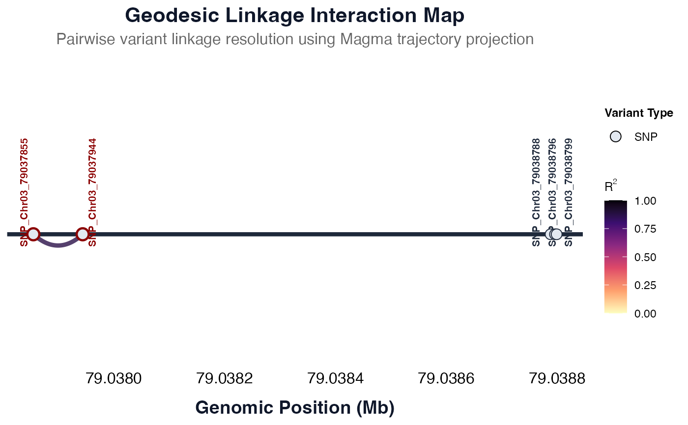

Generate Geodesic Landscape Plot and Extract Haploblock Data
Source:R/variant_discovery.R
plot_ld_geodesic.RdGenerate Geodesic Landscape Plot and Extract Haploblock Data
Usage
plot_ld_geodesic(
ld_df,
query_db_geno,
query_db_annot,
metric = "R2",
threshold = 0.2,
block_threshold = 0.8,
show_variant_labels = TRUE,
target_variant_ids = NULL,
filled = FALSE,
palette_option = "magma"
)Arguments
- ld_df
A long-format data frame of pairwise LD statistics containing columns
variant_1,variant_2, and the column matchingmetric.- query_db_geno
A data frame with variant genotype metadata. Must include a
variant_idcolumn and a genomic position column (e.g., 'pos').- query_db_annot
A data frame with variant annotation metadata. Must include
variant_idand a functionalimpactcolumn.- metric
Character string. The linkage metric to visualize ("R2" or "D_prime").
- threshold
Numeric. The minimum LD value to display. Pairs below this value fade to white background spaces. Defaults to 0.2.
- block_threshold
Numeric. The threshold at which to group and isolate block variants. Defaults to 0.8.
- show_variant_labels
Logical. If TRUE (default), displays variant IDs above the spine.
- target_variant_ids
A character vector of variant IDs to highlight on the plot.
- filled
Logical. If `TRUE`, renders filled geodesic polygons. If `FALSE` (default), renders line-based trajectories.
- palette_option
Character string. The `viridis` color palette to use for mapping LD values these include: "magma", "plasma", "inferno", "viridis", "mako", "cividis", "rocket" and "turbo". Defaults to `"magma"`.
Value
A structured list containing two named assets:
plot: A ggplot object showing the geodesic LD landscape.table: A data frame where columns represent haploblocks, listing their constituent variants and impacts.
Examples
# \donttest{
query_annot <- panGenomeBreedr::fetch_table_region(
table_name = "annotations",
chrom = "Chr03",
gene_name = "Sobic.003G421300",
start = 79037682,
end = 79039091,
connect_db_mode = 'online'
)
query_geno <- panGenomeBreedr::fetch_table_region(
table_name = "genotypes",
chrom = "Chr03",
start = 79037682,
end = 79039091,
connect_db_mode = 'online'
)
# Compute your updated wide data containing distance tracking columns
ld_results <- calculate_LD(
df = query_geno,
target_variant_ids = NULL,
genotype_start_col = 11
)
# Generate the plot and table package
result <- plot_ld_geodesic(
ld_df = ld_results,
query_db_geno = query_geno,
query_db_annot = query_annot,
metric = "R2",
target_variant_ids = c("INDEL_Chr03_79037889", "SNP_Chr03_79037855","SNP_Chr03_79037944"),
threshold = 0.8,
block_threshold = 0.8
)
# Access the plot
result$plot

# Access the haploblock table
print(result$table)
#> Block_1 Block_1_Impact_Level Block_2
#> 1 SNP_Chr03_79037855 MODIFIER | MODERATE SNP_Chr03_79038788
#> 2 SNP_Chr03_79037944 LOW SNP_Chr03_79038796
#> 3 <NA> <NA> SNP_Chr03_79038799
#> Block_2_Impact_Level
#> 1 MODIFIER
#> 2 MODIFIER
#> 3 MODIFIER
# }